Extending the Rasterizer
We’ll conclude this second part of the book the same way we concluded the first one: with a set of possible extensions to the rasterizer we’ve developed in the preceding chapters.
Normal Mapping
In Chapter 13 (Shading), we saw how the normal vectors of a surface have a big impact on its appearance. For example, the right choice of normals can make a faceted object look smoothly curved; this is because the right choice of normals changes the way light interacts with the surface, which in turn changes the way our brain guesses the shape of the object. Unfortunately, there’s not much more we can do by interpolating normals beyond making surfaces look smoothly curved.
In Chapter 14 (Textures), we saw how we could add fake detail to a surface by “painting” on it. This technique, called texture mapping, gives us much finer-grained control over the appearance of a surface. However, texture mapping doesn’t change the shape of the triangles—they’re still flat.
Normal mapping combines both ideas. We can use normals to change the way light interacts with a surface and thus change the apparent shape of the surface; we can use attribute mapping to assign different values of an attribute to different parts of a triangle. By combining the two ideas, normal mapping lets us define surface normals at the pixel level.
To do this, we associate a normal map to each triangle. A normal map is similar to a texture map, but its elements are normal vectors instead of colors. At rendering time, instead of computing an interpolated normal like Phong shading does, we use the normal map to get a normal vector for the specific pixel we’re rendering, in the same way that texture mapping gets a color for that specific pixel. Then we use this vector to compute lighting at that pixel.
Figure 15-1 shows a flat surface with a texture map applied, and the effects of different light directions when a normal map is also applied.
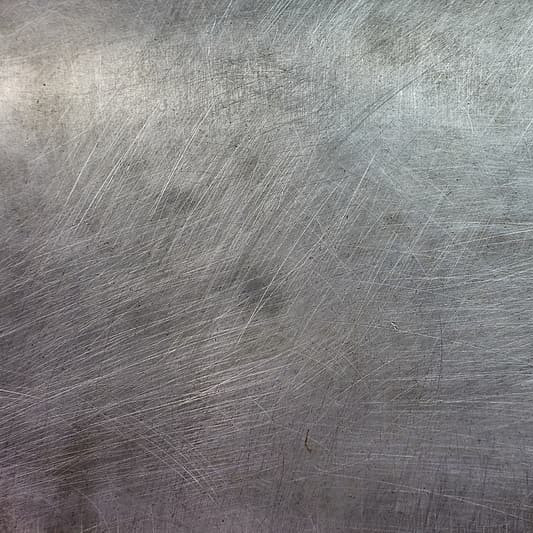
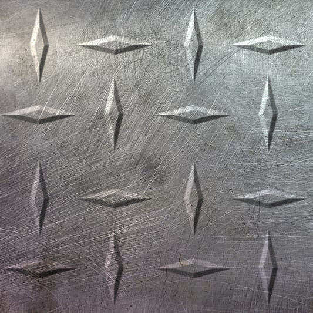
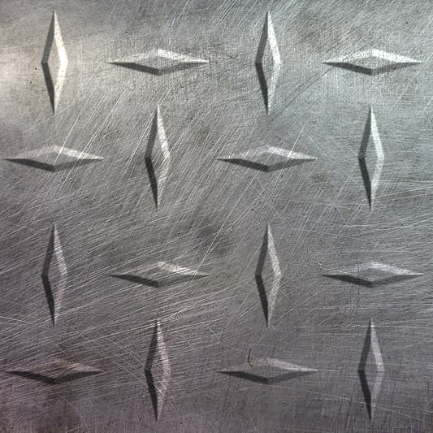
All three images in Figure 15-1 are renders of a flat square (that is, two triangles) with a texture, as seen in (a). When we add a normal map and the appropriate per-pixel shading, we create the illusion of extra geometrical detail. In (b) and (c), the shading of the diamonds depends on the direction of the incident light, and our brain interprets this as the diamonds having volume.
There are a couple of practical considerations to keep in mind. First, the orientations of the vectors in the normal map are relative to the surface of the triangle they apply to. The coordinate system used for this is called tangent space, where two of the axes (usually \(X\) and \(Z\)) are tangent to (that is, embedded in) the surface and the remaining vector is perpendicular to the surface. At rendering time, the normal vector of the triangle, expressed in camera space, is modified according to the vector in the normal map to obtain a final normal vector that can be used for the illumination equations. This makes a normal map independent of the position and orientation of the object in the scene.
Second, a very popular way to encode normal maps is as textures, mapping the values of \(X\), \(Y\), and \(Z\) to \(R\), \(G\), and \(B\) values. This gives normal maps a very characteristic purple-ish appearance, because purple, a combination of red and blue but no green, encodes flat areas of the surface. Figure 15-2 shows the normal map used in the examples in Figure 15-1.
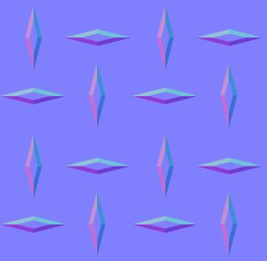
While this technique can drastically improve the perceived complexity of surfaces in a scene, it’s not without limitations. For example, since flat surfaces remain flat, it can’t change the silhouette of an object. For the same reason, the illusion breaks down when a normal-mapped surface is viewed from an extreme angle or up close, or when the features represented by the normal map are too big compared to the size of the surface. This technique is better suited to subtle detail, such as pores on the skin, the pattern on a stucco wall, or the irregular appearance of an orange peel. For this reason, the technique is also known as bump mapping.
Environment Mapping
One of the most striking characteristics of the raytracer we developed is the ability to show objects reflecting one another. It is possible to create a relatively convincing, but somewhat fake, implementation of reflections in our rasterizer.
Imagine we have a scene representing a room in a house, and we want to render a reflective object placed in the middle of the room. For each pixel representing the surface of that object, we know the 3D coordinates of the point it represents, the surface normal at that point, and, since we know the position of the camera, we can also compute the view vector to that point. We could reflect the view vector with respect to the surface normal to obtain a reflection vector, just like we did in Chapter 4 (Shadows and Reflections).
At this point, we want to know the color of the light coming from the direction of the reflection vector. If this were a raytracer, we’d just trace a ray in that direction and find out. However, this is not a raytracer. What to do?
Environment mapping provides one possible answer to this question. Suppose that before rendering the objects inside the room, we place a camera in the middle of it and render the scene six times—once for each perpendicular direction (up, down, left, right, front, back). You can imagine the camera is inside an imaginary cube, and each side of the cube is the viewport of one of these renders. We keep these six renders as textures. We call this set of six textures a cube map, which is why this technique is also called cube mapping.
Then we render the reflective object. When we get to the point of needing a reflected color, we can use the direction of the reflected vector to choose one of the textures of the cube map, and then a texel of that texture to get an approximation of the color seen in that direction—all without tracing a single ray!
This technique has some drawbacks. The cube map captures the appearance of a scene from a single point. If the reflective object we’re rendering isn’t located at that point, the position of the reflected objects won’t fully match what we would expect, so it will become clear that this is just an approximation. This would be especially noticeable if the reflective object were to move within the room, because the reflected scene wouldn’t change as the object moves.
This limitation also suggests the best applications for the technique: if the “room” is big enough and distant enough from the object—that is, if the movement of the object is small with respect to the size of the room—the difference between the true reflection and the pre-rendered environment maps can go unnoticed. For example, this would work very well for a scene representing a reflective spaceship in deep space, since the “room” (the distant stars and galaxies) is infinitely far away for all practical purposes.
Another drawback is that we’re forced to split the objects in the scene into two categories: static objects that are part of the “room,” which are seen in reflections, and dynamic objects that can be reflective. In some cases, this might be clear (walls and furniture are part of the room; people aren’t), but even then, dynamic objects wouldn’t be reflected on other dynamic objects.
A final drawback worth mentioning is related to the resolution of the cube maps. Whereas in the raytracer we could trace very precise reflections, in this case we need to make a trade-off between accuracy (higher-resolution cube map textures produce sharper reflections) and memory consumption (higher-resolution cube map textures require more memory). In practice, this means that environment maps won’t produce reflections that are as sharp as true raytraced reflections, especially when looking at reflective objects up close.
Shadows
The raytracer we developed featured geometrically correct, very well-defined shadows. These were a very natural extension to the core algorithm. The architecture of a rasterizer makes it slightly more complex to implement shadows, but not impossible.
Let’s start by formalizing the problem we’re trying to solve. In order to render shadows correctly, every time we compute the illumination equation for a pixel and a light, we need to know whether the pixel is actually illuminated by the light or whether it’s in the shadow of an object with respect to that light.
With the raytracer, we could answer this question by tracing a ray from the surface to the light; in the rasterizer, we don’t have such a tool, so we’ll have to take a different approach. Let’s explore two different approaches.
Stencil Shadows
Stencil shadows is a technique to render shadows with very well-defined edges (imagine the shadows cast by objects on a very sunny day). These are often called hard shadows.
Our rasterizer renders the scene in a single pass; it goes over every triangle in the scene and renders it on the canvas, computing the full illumination equation every time (on a per-triangle, per-vertex, or per-pixel basis, depending on the shading algorithm). At the end of this process, the canvas contains the final render of the scene.
We’ll start by modifying the rasterizer to render the scene in several passes, one for each light in the scene (including the ambient light). Like before, each pass goes over every triangle, but it computes the illumination equation taking into account only the light associated with that pass.
This gives us a set of images of the scene illuminated by each light separately. We can compose them together—that is, add them pixel by pixel—giving us the final render of the scene. This final image is identical to the image produced by the single-pass version. Figure 15-3 shows three light passes and the final composite for our reference scene.
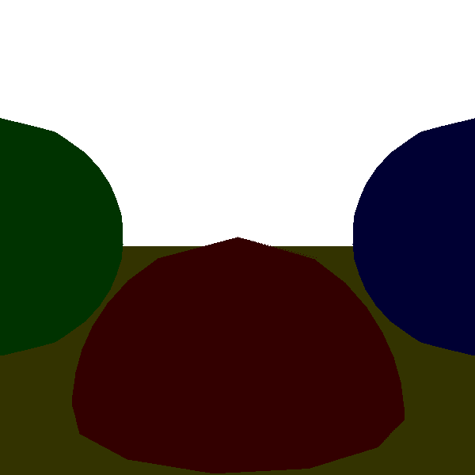
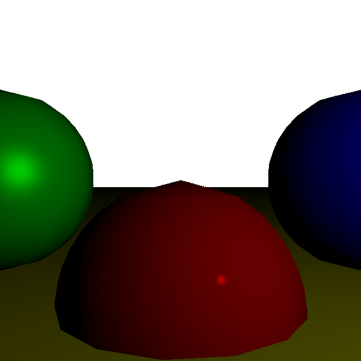
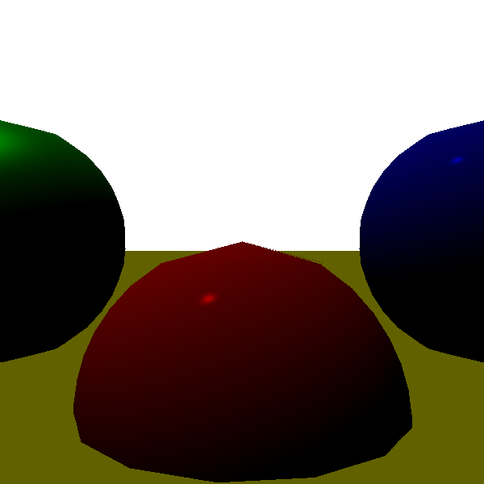
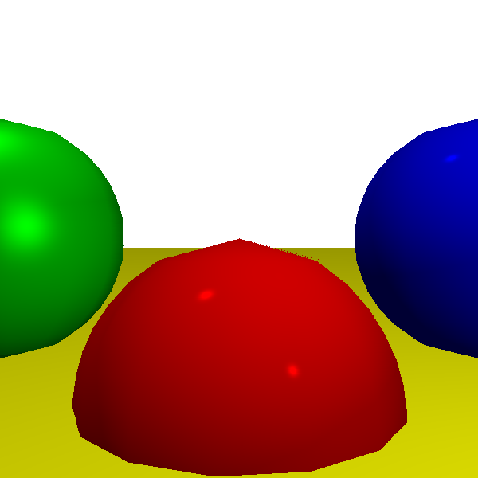
This lets us simplify our goal of “rendering a scene with shadows from multiple lights” into “rendering a scene with shadows from a single light, many times.” Now we need to find a way to render a scene illuminated by a single light, while leaving the pixels that are in shadow from that light completely black.
For this, we introduce the stencil buffer. Like the depth buffer, it has the same dimensions as the canvas, but its elements are integers. We can use it as a stencil for rendering operations, for example, modifying our rendering code to draw a pixel on the canvas only if the corresponding element in the stencil buffer has a value of zero.
If we can set up the stencil buffer in such a way that illuminated pixels have a value of zero and pixels in shadow have a nonzero value, we can use it to draw only the pixels that are illuminated.
Creating Shadow Volumes
To set up the stencil buffer, we use something called shadow volumes. A shadow volume is a 3D polygon “wrapped” around the volume of space that’s in shadow from a light.
We construct a shadow volume for each object that might cast a shadow on the scene. First, we determine which edges are part of the silhouette of the object; these are the edges between front-facing and back-facing triangles (we can use the dot product to classify the triangles, like we did for the back-face culling technique in Chapter 12 (Hidden Surface Removal)). Then, for each of these edges, we extrude them away from the direction of the light, all the way to infinity—or, in practice, to a really big distance beyond the scene.
This gives us the “sides” of the shadow volume. The “front” of the volume is made by the front-facing triangles of the object itself, and the “back” of the volume can be computed by creating a polygon whose edges are the “far” edges of the extruded sides.
Figure 15-4 shows the shadow volume created this way for a cube with respect to a point light.
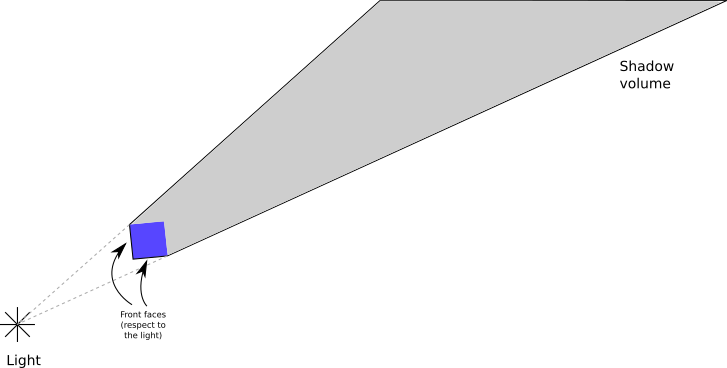
Next, we’ll see how to use the shadow volumes to determine which pixels in the canvas are in shadow with respect to a light.
Counting Shadow VolumeRay Intersections
Imagine a ray starting from the camera and going into the scene until it hits a surface. Along the way, it might enter and leave any number of shadow volumes.
We can keep track of this with a counter that starts at zero. Every time the ray enters a shadow volume, we increment the counter; every time it leaves, we decrement it. We stop when the ray hits a surface and look at the counter. If it’s zero, it means the ray entered as many shadow volumes as it left, so the point must be illuminated; if it’s not zero, it means the ray is inside at least one shadow volume, so the point must be in shadow. Figure 15-5 shows a few examples of this.
However, this only works if the camera itself is not inside a shadow volume! If a ray starts inside the shadow volume and doesn’t leave it before hitting the surface, our algorithm would incorrectly conclude that it’s illuminated.
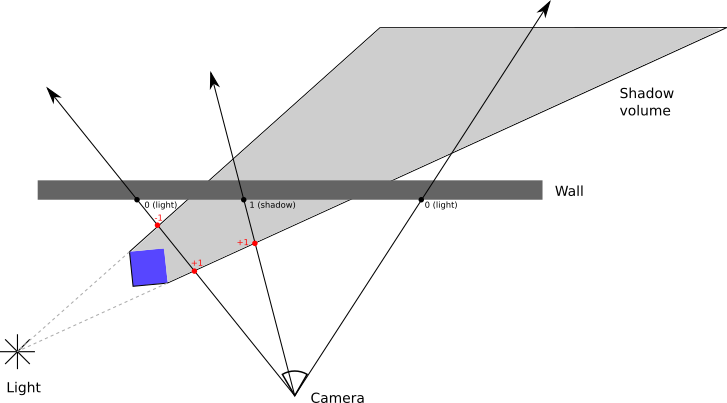
We could check for this condition and adjust the counter accordingly, but counting how many shadow volumes a point is inside of is an expensive operation. Fortunately, there’s a way to overcome this limitation that is simpler and cheaper, if somewhat counter-intuitive.
Rays are infinite, but shadow volumes aren’t. This means a ray always starts and ends outside a shadow volume. This, in turn, means that a ray always enters a shadow volume as many times as it leaves it; the counter for the entire ray must always be zero.
Suppose we keep track of the intersections between the ray and the shadow volume after the ray hits the surface. If the counter has a value of zero, then the value must also be zero before the ray hits the surface. If the counter has a nonzero value, it must have the opposite value on the other side of the surface.
This means counting intersections between the ray and the shadow volume before the ray hits the surface is equivalent to counting the intersections after it—but in this case, we don’t have to worry about the position of the camera! Figure 15-6 shows how this technique always produces correct results.
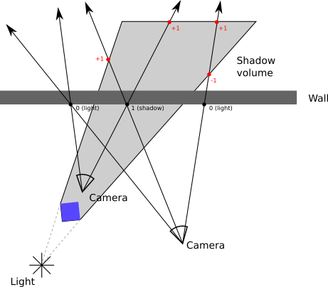
Setting up the Stencil Buffer
We’re working with a rasterizer, not with a raytracer, so we need to find a way to keep these counters without actually computing any intersections between rays and shadow volumes. We can do this by using the stencil buffer.
First, we render the scene as illuminated only by the ambient light. The ambient light casts no shadows, so we can do this without any changes to the rasterizer. This gives us one of the images we need to compose the final render, but it also gives us depth information for the scene, as seen from the camera, contained in the depth buffer. We need to keep this depth buffer for the next steps.
Next, for each light, we follow these steps:
“Render” the back faces of the shadow volumes to the stencil buffer, incrementing its value whenever the pixel fails the depth buffer test. This counts the number of times the ray leaves a shadow volume after hitting the closest surface.
“Render” the front faces of the shadow volumes to the stencil buffer, decrementing its value whenever the pixel fails the depth buffer test. This counts the number of times the ray enters a shadow volume after hitting the closest surface.
Note that during the “rendering” steps, we’re only interested in modifying the stencil buffer; there’s no need to write pixels to the canvas, and therefore no need to calculate illumination or texturing. We also don’t write to the depth buffer, because the sides of the shadow volumes aren’t actually physical objects in the scene. Instead, we use the depth buffer we computed during the ambient lighting pass.
After doing this, the stencil buffer has zeros for the pixels that are illuminated and other values for the pixels that are in shadow. So we render the scene normally, illuminated by the single light corresponding to this pass, calling PutPixel only on the pixels where the stencil buffer has a value of zero.
Repeating this process for every light, we end up with a set of images corresponding to the scene illuminated by each of the lights, with shadows correctly taken into account. The final step is to compose all the images into a final render of the scene by adding them together pixel by pixel.
The idea of using the stencil buffer to render shadows dates back to the early 1990s, but the first implementations had several drawbacks. The depth-fail variant described here was independently discovered several times during 1999 and 2000, most notably by John Carmack while working on Doom 3, which is why this variant is also known as Carmack’s Reverse.
Shadow Mapping
The other well-known technique to render shadows in a rasterizer is called shadow mapping. This renders shadows with less defined edges (imagine the shadows cast by objects on a cloudy day). These are often called soft shadows.
To reiterate, the question we’re trying to answer is, given a point on a surface and a light, does the point receive illumination from that light? This is equivalent to determining whether there’s an object between the light and the point.
With the raytracer, we traced a ray from the point to the light. In some sense, we’re asking whether the point can “see” the light, or, equivalently, whether the light can “see” the point.
This leads us to the core idea of shadow mapping. We render the scene from the point of view of the light, preserving the depth buffer. Similar to how we created the environment maps we described above, we render the scene six times and end up with six depth buffers. These depth buffers, which we call shadow maps, let us determine the distance to the closest surface the light can “see” in any given direction.
The situation is slightly more complicated for directional lights, because these have no position to render from. Instead, we need to render the scene from a direction. This requires using an orthographic projection instead of our usual perspective projection. With perspective projection and point lights, every ray starts from a point; with orthographic projection and directional lights, every ray is parallel to each other, sharing the same direction.
When we want to determine whether a point is in shadow or not, we compute the distance and the direction from the light to the point. We use the direction to look up the corresponding entry in the shadow map. If this depth value is smaller than the distance from the point to the light, it means there’s a surface that is closer to the light than the point we’re illuminating, and therefore the point is in the shadow of that surface; otherwise, the light can “see” the point unobstructed, so the point is illuminated by the light.
Note that the shadow maps have a limited resolution, usually lower than the canvas. Depending on the distance and the relative orientation of the point and the light, this might cause the shadows to look blocky. To avoid this, we can sample the depth of the surrounding depth entries as well and determine whether the point lies on the edge of a shadow (as evidenced by a depth discontinuity in the surrounding entries). If this is the case, we can use a technique similar to bilinear filtering, as we did in Chapter 14 (Textures), to come up with a value between 0.0 and 1.0 representing how much the point is visible from the light and multiply it by the illumination of the light; this gives the shadows created by shadow mapping their characteristic blurry appearance. Other ways to avoid the blocky appearance involve sampling the shadow map in different ways—look into percentage closer filtering, for example.
Summary
Like in Chapter 5 (Extending the Raytracer), this chapter briefly introduced several ideas you can explore by yourself. These extend the rasterizer developed over the previous chapters to bring its features closer to those of the raytracer, while retaining its speed advantage. There’s always a trade-off, and in this case it comes in the form of less accurate results or increased memory consumption, depending on the algorithm.